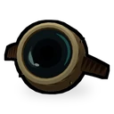

Across the Sand
Across the Sand is a quest line given by  Katherine. Katherine wants to know what is happening out in the Red Desert.
Katherine. Katherine wants to know what is happening out in the Red Desert.
How it opens
- Finish the Greenshore Story.
Steps
| # | Quest | Level | Objective | Rewards |
|---|---|---|---|---|
| 1 | Something Under the Sand | 23 | Defeat the Desert Worm. |  Adamantite Ingot ×5 Adamantite Ingot ×5 |
| 2 | Dock His Pay | 26 | Defeat the Scrap Warlord. | Adamantite Ingot ×5 Ipe Plank ×5 Ipe Plank ×5 |
| 3 | Wake the Dead | 29 | Defeat the Possessed Sarcophagus. | Adamantite IngotIpe Plank ×3 |
| 4 | Hard as Rock | 32 | Defeat the Sandstone Golem. |  Adamantite Armor Adamantite Armor |
| 5 | The Prisoner | 34 | Defeat the Old Man. | Adamantite Ingot ×8Ipe Plank ×8 Nettle Fabric ×8 Nettle Fabric ×8 |
| 6 | Shut the Gate | 36 | Defeat the Unbound. |  Treasure Seal ×2 Treasure Seal ×2 Ironbark Tonic ×2 Ironbark Tonic ×2 Gold Coin ×1,500 Gold Coin ×1,500 |
| 7 | The Desert Saved | 36 | Complete the Red Desert Story. |  Riveted Plate ×3 Riveted Plate ×3 Smoked LensGold Coin ×3,000 |